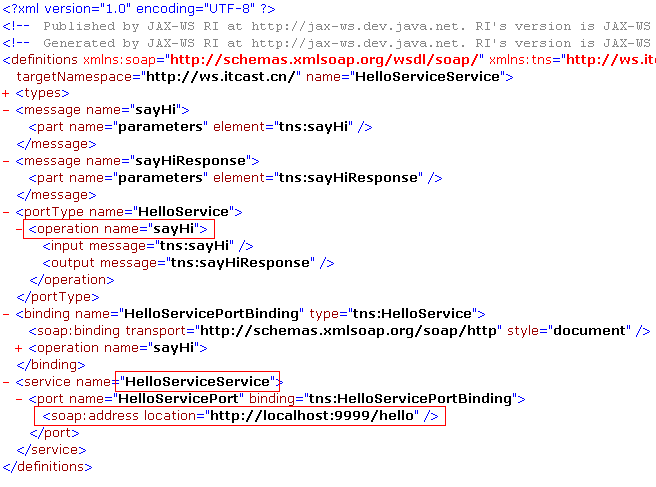
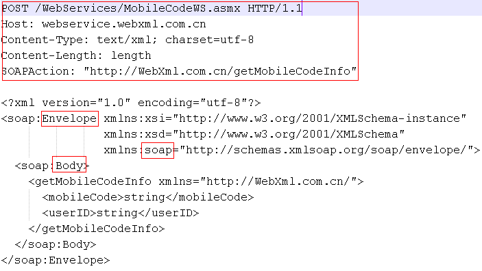
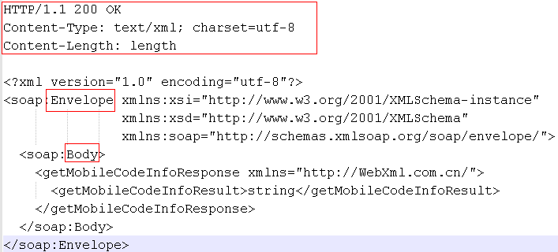
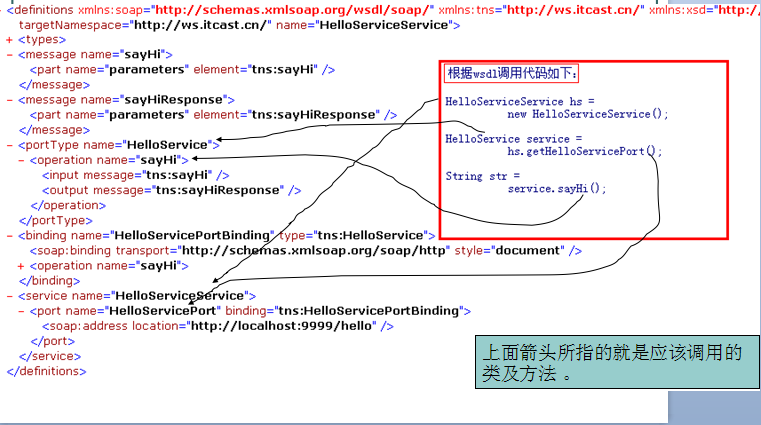
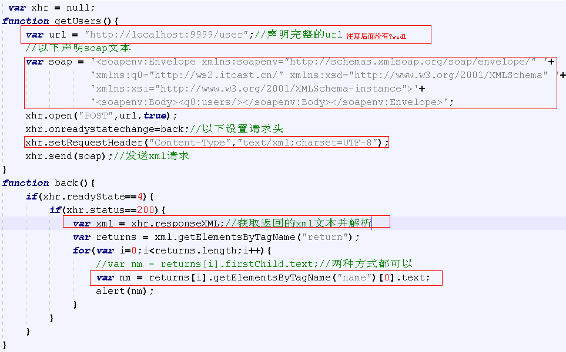
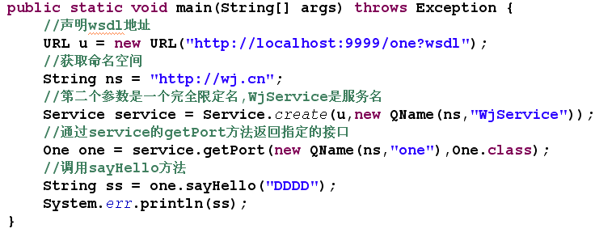
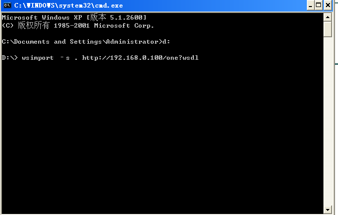
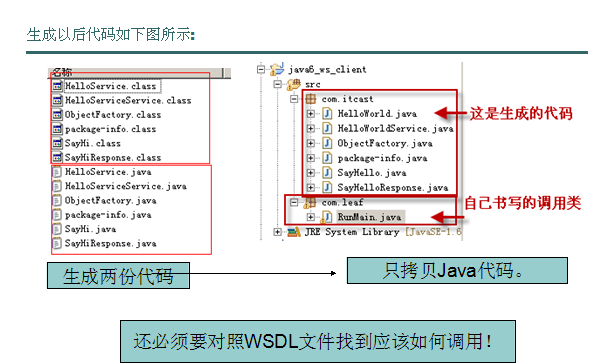

https://my.oschina.net/u/1425737/blog/217758
概念：
1、WebService，顾名思义就是基于Web的服务。它使用Web(HTTP)方式，接收和响应外部系统的某种请求。从而实现远程调用.
2、我们可以调用互联网上查询天气信息Web服务，然后将它嵌入到我们的程序(C/S或B/S程序)当中来，当用户从我们的网点看到天气信息时，他会认为我们为他提供了很多的信息服务，但其实我们什么也没有做，只是简单调用了一下服务器上的一段代码而已。
3、学习WebService可以将你的服务(一段代码)发布到互联网上让别人去调用,也可以调用别人机器上发布的WebService,就像使用自己的代码一样.。
简单名词：
名词1：XML. Extensible Markup Language －扩展性标记语言
XML，用于传输格式化的数据，是Web服务的基础。
namespace-命名空间。
xmlns=“http://itcast.cn” 使用默认命名空间。
xmlns:itcast=“http://itcast.cn”使用指定名称的命名空间。
名词2：WSDL – WebService Description Language – Web服务描述语言。
通过XML形式说明服务在什么地方－地址。
通过XML形式说明服务提供什么样的方法 – 如何调用。
名词3：SOAP-Simple Object Access Protocol(简单对象访问协议)
SOAP作为一个基于XML语言的协议用于有网上传输数据。
SOAP = 在HTTP的基础上+XML数据。
SOAP是基于HTTP的。
SOAP的组成如下：
Envelope – 必须的部分。以XML的根元素出现。
Headers – 可选的。
Body – 必须的。在body部分，包含要执行的服务器的方法。和发送到服务器的数据。
WSDL－说明服务在哪里，如何调用，其实就是一个使用说明书：

SOAP协议的范本：－请求示例
以下发出HTTP请求，但不同的是向服务器发送的是XML数据！

SOAP协议：－响应示例：
响应的信息，同发送信息一样，先必须是HTTP协议，然后再遵循SOAP协议

在Java项目中发布第一个WS服务
1、用Jdk1.6.0_21以后的版本发布一个WebService服务.
2、与Web服务相关的类，都位于javax.jws.*包中。
主要类有：
1、 @WebService － 它是一个注解，用在类上指定将此类发布成一个ws.
2、 Endpoint – 此类为端点服务类，它的方法publish用于将一个已经添加了@WebService注解对象绑定到一个地址的端口上。
@WebService(name = "WebApp", targetNamespace = "http://baobaodaren/")
public class WebApp {
public String sayHi(String name){
System.out.println("server go...");
return "youname"+name;
}
public static void main(String[] args) {
Endpoint.publish("http://192.168.1.24:1234/hi", new WebApp());
System.out.println("server ready...");
}
}注意事项：
１、在类上添加@WebService注解。
这是jdk1.6提供的一个注解。它位于：javax.jws.*包中。
２、通过EndPoint(端点服务)发布一个webService。
Endpoint也是jdk提供的一个专门用于发布服务的类，它的publish方法接收两个参数，一个是本地的服务地址，二是提供服务的类。它位于javax.xml.ws.*包中。
static Endpoint.publish(String address, Object implementor) 在给定地址处针对指定的实现者对象创建并发布端点。
stop方法用于停止服务。
EndPoint发布完成服务以后，将会独立的线程运行。所以，publish之后的代码，可以正常执行。
其他注意事项：
给类添加上@WebService注解后，类中所有的非静态方法都将会对外公布。
不支持静态方法，final方法。－
如果希望某个方法(非static,非final)不对外公开，可以在方法上添加@WebMethod(exclude=true)，阻止对外公开。
如果一个类上，被添加了@WebService注解，则必须此类至少有一个可以公开的方法，否则将会启动失败。
服务发布成功了，如何调用呢？请看说明书-WSDL：
在地址栏输入(注意后面的参数?wsdl)
http://192.168.1.24:1234/hi?wsdl
目前不是访问webService,只是获取一个用于描述WebService的说明文件,即:wsdl文件.
wsdl- WebService Description Language,是以XML文件形式来描述WebService的”说明书”,有了说明书,我们才可以知道如何使用或是调用这个服务.
使用wsimport生成本地调用代码：
wsimport是jdk自带的,可以根据wsdl文档生成客户端调用代码的工具.当然,无论服务器端的WebService是用什么语言写的,都将在客户端生成Java代码.服务器端用什么写的并不重要.
wsimport.exe位于JAVA_HOME\bin目录下.
常用参数为:
-d<目录> - 将生成.class文件。默认参数。
-s<目录> - 将生成.java文件。
-p<生成的新包名> -将生成的类，放于指定的包下。
(wsdlurl) - http://server:port/service?wsdl，必须的参数。
示例：
C:/> wsimport –s . http://192.168.0.100/one?wsdl
注意：-s不能分开，-s后面有个小点，用于指定源代码生成的目录。点即当前目录。
如果使用了-s参数则会在目录下生成两份代码，一份为.class代码。一份为.java代码。
.class代码，可以经过打包以后使用。.java代码可以直接Copy到我们的项目中运行。
看懂使用说明书WSDL:

WebService通过HTTP协议完成远程调用: (深入分析) – RPC
WebService只采用HTTP POST方式传输数据，不使用GET方式; -- 握手，WSDL-get,
普通http post的contentType为
application/x-www-form-urlencoded
WebService的contentType为－即在Http的基础上发SOAP协议
text/xml 这是基于soap1.1协议。
application/soap+xml 这是基于soap1.2协议。
WebService从数据传输格式上作了限定。WebService所使用的数据均是基于XML格式的。目前标准的WebService在数据格式上主要采用SOAP协议。SOAP协议实际上就是一种基于XML编码规范的文本协议。
SOAP – Simple Object Access protocol 简单对像访问协议。是运行在HTTP协议基础之上的协议。其实就是在HTTP协议是传输XML文件，就变成了SOAP协议。
SOAP1.1和SOAP1.2的 namespace不一样。可以通过查看类
javax.xml.ws.soap.SOAPBinding来查看里面的常量
默认情况下，Jdk1.6只支持soap1.1
即：@BindingType(value=javax.xml.ws.soap.SOAPBinding.SOAP11HTTP_BINDING)
WebService和Web服务器的区别
WebService和Web服务器有什么区别呢？我们可以把WebService看作是Web服务器上应用；反过来说，Web服务器是WebService运行时所必需的容器。这就是它们的区别和联系。
使用JDK1.6发布的简单Web服务，其内部其实是使用Socket实现。可以查看：SUN公司未对外公布的API类com.sun.xml.internal.ws.transport.http.server. ServerMgr获知，请使用反编译工具。
WebService的特点：
WebService通过HTTP POST方式接受客户的请求
WebService与客户端之间一般使用SOAP协议传输XML数据.
它本身就是为了跨平台或跨语言而设计的。
客户端调用WebService的方式：
通过wsimport生成客户端代码
通过客户端编程的方式调用
通过ajax调用 (js+XML)
通过URLConnection调用
使用原生的ajax调用web服务：
由于使用ajax – js调用web服务完成不同于使用java代码调用。所以，必须要对SOAP文件非常的了解。
一般使用ajax调用，应该是在已经获知了以下信息以后才去调用：
获知请求（request）的soap文本。
获知响应(response)的soap文本。

客户端通过编程的方式访问服务:
使用javax.xml.ws.Service类用于访问web服务。
关键类Service：
方法create – 用户创建Service对像，提供wsdlurl和服务名。
getPort-用于通过指定namespace，portName和接口的范型。
在客户端需要一个与服务器接口完全相同的类。（仍然使用工具生成。但只需要一个接口。并需要简单修改。如果返 回的是复杂数据类型如POJO，还需要将POJO一并放到项目中）-不要试图通过-p来修改包名，会出错的。
关键类QName – 被称为完全限定名即：Qualified Name的缩写：
QName 的值包含名称空间 URI、本地部分和前缀

通过URLConnection调用：
/**
* 通过URLConnection调用webService服务
* @author Administrator
*
*/
public class URLConnectionApp {
public static void main(String[] args) throws Exception {
//制定websercice的地址
String wsUrl = "http://192.168.1.24:1234/hi";
URL url = new URL(wsUrl);
URLConnection coon = url.openConnection();
HttpURLConnection con = (HttpURLConnection)coon;
//设置请求方式
con.setDoInput(true);
con.setDoOutput(true);
con.setRequestMethod("POST");
con.setRequestProperty("content-type","text/xml;charset=UTF-8");
//手动构造请求体
String requestBoby="<soapenv:Envelope xmlns:soapenv=\"http://schemas.xmlsoap.org/soap/envelope/\" "+
" xmlns:q0=\"http://webxml.com.cn/\" xmlns:xsd=\"http://www.w3.org/2001/XMLSchema \" "+
" xmlns:xsi=\"http://www.w3.org/2001/XMLSchema-instance\">"+
"<soapenv:Body><q0:sayHi><arg0>lisi</arg0> <arg1>10</arg1> </q0:sayHi></soapenv:Body></soapenv:Envelope>";
OutputStream out = con.getOutputStream();
out.write(requestBoby.getBytes());
out.close();
int code = con.getResponseCode();
if(code==200){
InputStream input = con.getInputStream();
byte[] b = new byte[1024];
StringBuffer sb = new StringBuffer();
int len = 0;
while((len=input.read(b))!=-1){
String str = new String(b,0,len,"UTF-8");
sb.append(str);
}
System.out.println(sb.toString());
input.close();
}
con.disconnect();
}
}通过wsimport生成客户端代码：


以上就是简单的webservice